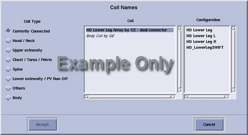
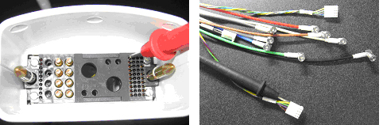
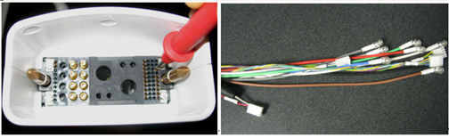

- 00000018WIA309FDD20GYZ
- id_131068553.0
- Aug 29, 2019 1:52:48 AM
1.5T HD Lower Leg Array Coil Troubleshooting
Personnel Requirements
| Required Persons | Preliminary Reqs | Procedure | Finalization |
|---|---|---|---|
| 1 | Timing N/A | 30 min | Timing N/A |
Overview
The following tips can be used to troubleshoot common problems with the 1.5T HD 16-Channel Lower Leg Array Coil.
Coils do not ship with phantoms. Phantoms come in a unified phantom set with the MR system.
Preliminary Requirements
Tools and Test Equipment
| Item | Qty | Part Number |
| Digital Volt Meter | 1 | - |
|
(For Legacy Phantom Set) Legacy Phantom | 1 | 2414905 |
|
(For Unified Phantom Set) Small Cylindrical Unified Phantom Set | 1 | 5342680 |
|
(For Unified Phantom Set) Large Cylindrical Unified Phantom Set | 1 | 5342679 |
|
(For Unified Phantom Set) Cubical Unified Phantom | 1 | 5342681 |
Required Conditions
The following coil configuration names must be installed to run the SNR tool:
-
HD_LowerLeg0
-
HD_LowerLeg1
-
HD_LowerLegL0
-
HD_LowerLegR1
-
HD Lower Leg
-
HD Lower Leg L
-
HD Lower Leg R
-
HD_LowerLeg_serv
-
HD_LowerLegL_serv
-
HD_LowerLegR_serv
Procedure
Receiving No Signal
Problem:
You are unable to pre-scan or are scanning and not receiving signal.
Possible Solution:
-
Verify the green light above the port (Port A or B, depends on which port is used to plug in the coil) is illuminated. This indicates the coil is properly plugged into the system.
-
Verify that the system has correctly detected the coil by checking in the Currently Connected window to select coils in Prescription as shown in the example in Figure 1.

-
Verify that the landmark is correct (1.5T HD Lower Leg Coil Setup for Coil SNR Test) and that the boot has not unlatched.
-
Verify that the scan locations and any FOV offsets are correct.
-
Perform a continuity check on the output cable (External Cable Check). The continuity check must be performed by a GE authorized Service Engineer.
-
Verify that the coil is positioned with the cable exiting towards the bore.
-
Verify that the cable is not looped or crossed.
There can also be a problem at the system interface port. If you still cannot get a signal, try to scan (transmit and receive) with the body coil. For this test, be sure to remove the imaging coil from the magnet bore before you scan with the body coil. If you still receive no signal the problem probably lies with the MR system. If the scan completes successfully, there is probably a problem with the PV coil. Contact GE for further assistance. If you are unable to scan with the substitute coil, there may be a system problem related to this particular coil type.
Image Quality
Problem:
Poor IQ, shaded images, or SNR fails
Possible Solution:
-
Perform a continuity check on the output cable (External Cable Check). The continuity check must be performed by a GE authorized Service Engineer.
-
Verify that there are no loops in the cables.
-
Verify that there are no metal or ferromagnetic objects close to the coil, patient or magnet (i.e., safety pin, hair pin).
-
Verify that the coil is properly positioned.
-
Verify that your center frequency is within the frequency adjustment range for your system.
-
Verify that the R1, R2 and TG values from the pre-scan are within normally expected ranges.
If you have not done so already, perform the coil Quality Assurance test (refer to Operator’s Manual). If the values you obtain do not fall within normal operating parameters, investigate this further by performing a phantom scan with the body coil. For this test, be sure to remove the imaging coil from the magnet bore before you scan with the body coil. If you still have the same problems, there is probably an MR system problem. If the body coil scan is satisfactory, acquire a scan using another coil of the exact same type (receive-only, phased array). If the image quality is visibly improved, there may be a problem with the lower leg array coil. Contact GE for further assistance. If the image quality still suffers, there may be a system problem related to imaging with this type of coil.
Artifacts
Problem:
There is a black line or signal void on the image.
Possible Solution:
Verify that there is no metal present in the area being scanned in or on the patient.
External Cable Check
Visual Check
Before removing the cable assembly from the coil, visually inspect all coaxial connectors and pins on the coil connector A and B. Figure 2 shows the pin layouts of the coil connector. The connector A/B of the coil must have 2 pins in column A, 10 pins in column F, 7 pins in column I, 4 RF coaxial connectors in column C and 4 RF coaxial connectors in column D, If there are any broken, deformed or recessed pins or coaxial connectors, perform the 1.5T HD 16-Channel PV Cable Replacement procedure.
Under no circumstances should the continuity of the center pin of the coax connectors be measured. They may be extremely fragile when improper tools are used.

Check for Continuity of DC Lines in the External Cable
-
Remove the cable assembly from the coil as described in the 1.5T HD 16-Channel PV Cable Replacement procedure.
-
There are eight pins in column F (F1 to F8 see Figure 2) connecting to DC wires of the cable. Table 1 shows these pins and corresponding DC wires. Use a Digital Volt Meter (DVM) to check the resistance between the pin in column F and the corresponding DC wire (see Figure 3). The resistance should be 0.2 ± 0.2W. If any resistance reading is not within this range, perform the 1.5T HD 16-Channel PV Cable Replacement procedure.
-
Check if any pin from F1 to F8 is shorted to the ground. The pin 6 in row I can be used as ground. If any pin is shorted to ground, perform the 1.5T HD 16-Channel PV Cable Replacement procedure.
| Pin in Column F | 1 | 2 | 3 | 4 | 5 | 6 | 7 | 8 |
| DC Wire Color | Yellow | Green | Purple | Brown | Yellow/white | Green/white | Gray | Blue |

Check for Continuity of the Preamp Bias
The system supplies the preamp bias voltage through pin I3. Referring to Figure 3, find pin 3 in row I. Use a DVM to check resistance between pin 3 and the corresponding DC wire (see Figure 4). The resistance should be 0.2 ± 0.2W. If any resistance reading is not within this range, perform the 1.5T HD 16-Channel PV Cable Replacement procedure.
| Pin in Column I | 3 |
| DC Wire Color | Red |
